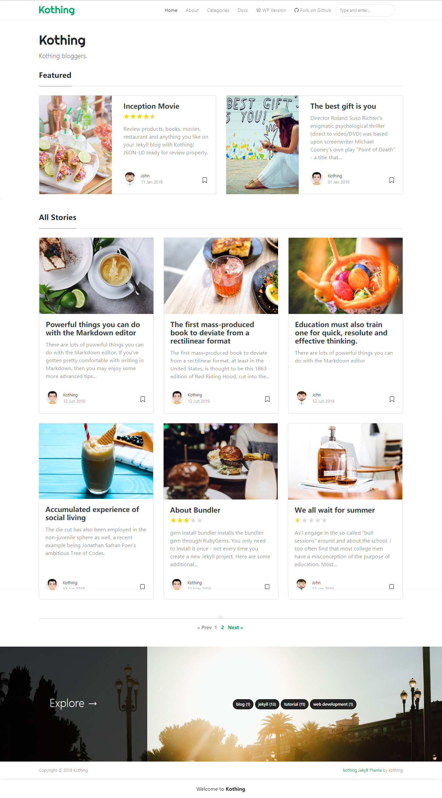

Meta-Explore Template for Jekyll
This website is built with Jekyll and Meta-Explore template for Jekyll. It's for demonstration purposes, no real content can be found. Meta-Explore template for Jekyll is compatible with Github pages, in fact even this demo is created with Github Pages and hosted with Github.

Documentation
"Meta-Explore" is a free Bootstrap Jekyll theme for blogging, collections, resources, reviews websites
Features
- Built for Jekyll
- Compatible with Github pages
- Featured Posts
- Index Pagination
- Multi Language
- SEO
- Feed
- Sitemap
- Post Share
- Post Categories
- Prev/Next Link
- Category Archives (Compatible with Github pages)
- Jumbotron Categories
- Post Reviews with Stars
- Blurred Spoilers
- Table of Content
- Lazy Load Images
- Integrations:
- Disqus Comments
- Google Analaytics
- Mailchimp Integration
- Design Features:
- Bootstrap v4.x
- Font Awesome
- Masonry
- Layouts:
- Default
- Post
- Page
- Archive
- Categories (for 100% compatibility with Github pages)
What’s Jekyll
If you aren’t familiar with Jekyll yet, you should know that it is a static site generator. It will transform your plain text into static websites and blogs. No more databases, slow loading websites, risk of being hacked…just your content. And not only that, with Jekyll you get free hosting with GitHub Pages! This page itself is free hosted on Github with the help of Jekyll and Meta-Explore template that you’re currently previewing. If you are a beginner we recommend you start with Jekyll’s Docs. Now if you know how to use Jekyll, let’s move on to using Meta-Explore template in Jekyll:
How to use "Meta-Explore" theme
- Download or
git clone https://github.com/meta-explore/github-pages-theme.git cd meta-explore-themebundle- Edit
_config.ymloptions. If your site is in root:baseurl: ''. Also, change your Google Analytics code, disqus username, authors, Mailchimp list etc. jekyll serve --watch- Start by adding your
.mdfiles in_posts. Meta-Explore already has a few examples. - YAML front matter
- featured post -
featured:true - exclude featured post from “All stories” loop to avoid duplicated posts -
hidden:true - post image -
image: assets/images/mypic.jpg - external post image -
image: "https://externalwebsite.com/image4.jpg" - page comments -
comments:true - meta description (optional) -
description: "this is my meta description"
- featured post -
YAML Post Example:
|
YAML Post Example:
|
Rating
|
Lazy Load Images
Enable this option by editing _config.yml.
|
Table of Contents
|
beforetoc adds a paragraph before the TOC is displayed. Demo
Questions or bug reports?
Head over to our Github repository!
Buy me a coffee
Thank you for your support! Your donation helps me to maintain and improve Meta-Explore .
Buy me a coffee Documentation